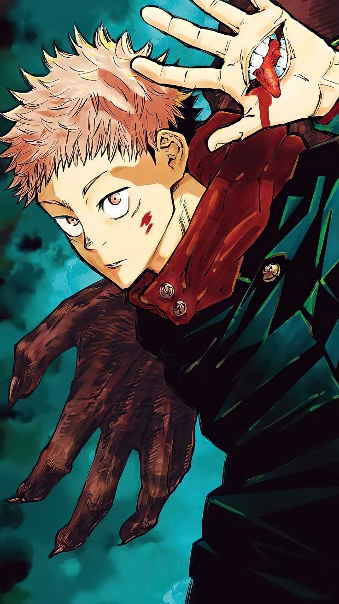
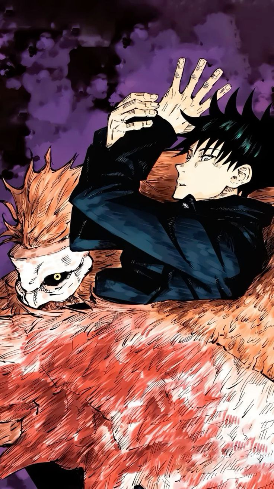
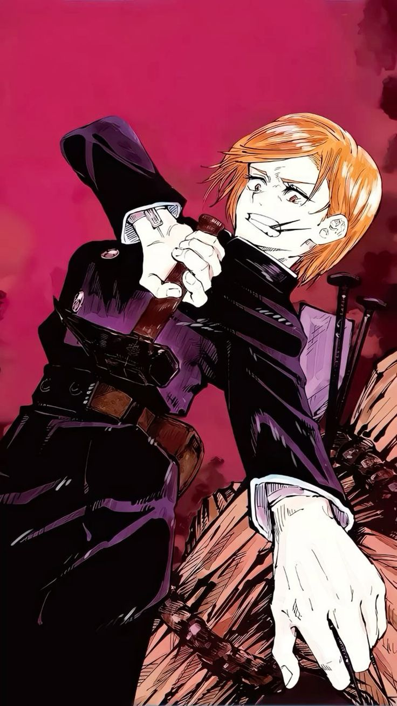
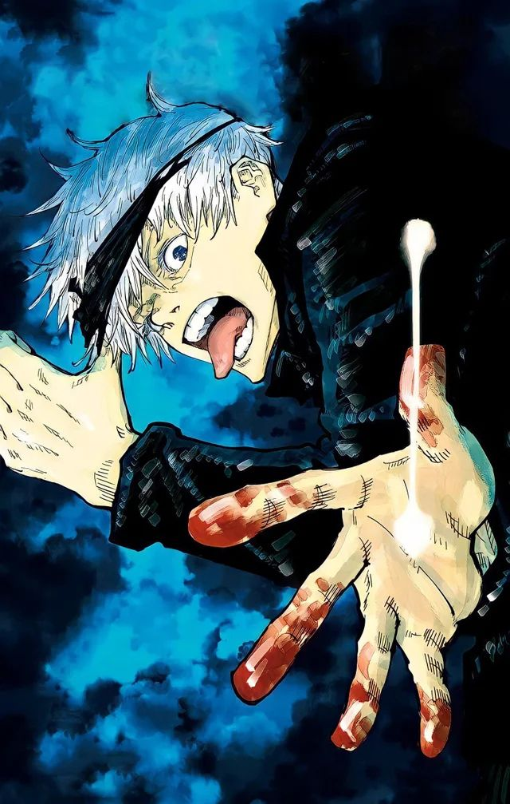
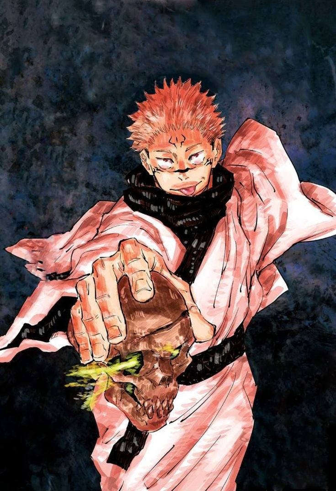
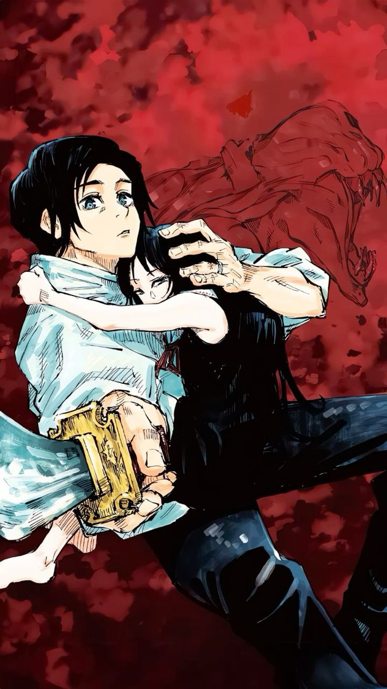

Año de estreno: 2020
País de origen: Japón
Género(s): Acción, Aventura, Sobrenatural, Fantasía oscura
Creadores: Gege Akutami
LLas emociones negativas creadas por los humanos se convierten en maldiciones y se esconden en la vida cotidiana. Las maldiciones son una fuerte epidemia en el mundo y, en el peor de los casos, lleva a los humanos a la muerte. Estas maldiciones solo pueden ser exorcizadas. Yuji Itadori, quien tiene una increíble fuerza física, pero no tiene ningún interés en los deportes y prefiere apuntarse al club de ocultismo de la escuela con tal de no dar palo al agua. Sin embargo, tras la aparición de un espíritu maligno, la cosa empiezan a tornarse un tanto serias y su vida cambia por completo.
| Nombre | Foto | Descripción |
|---|---|---|
| Yuuji Itadori |  | Es el protagonista de la serie, estudiante de primer año en el Colegio Técnico de Magia Metropolitana de Tokio y recipiente del Rey de las Maldiciones, Sukuna. A partir de entonces, Itadori tiene la misión de encontrar los restos de Sukuna que se encuentran esparcidos por todo Japón e ingerirlos, para luego ser ejecutado y destruir para siempre al Rey de las Maldiciones. |
| Megumi Fushiguro |  | Otro de los protagonistas de la serie, estudiante de primer año en el Colegio Técnico de Magia Metropolitana de Tokio y compañero de Yuji Itadori y Nobara Kugisaki. Antiguo miembro del Clan Zenin y hermanastro de Tsumiki Fushiguro, nació con el talento innato de hacer uso de la Técnica de Sombras de Diez Tipos. |
| Nobara Kugisaki |  | Es una de los protagonistas de la serie, es una estudiante de primer año del Colegio Técnico de Magia Metropolitana de Tokio, y compañera de Yuji Itadori y Megumi Fushiguro. Solía vivir en el campo, en un pueblo y llega a Tokio con el fin de convertirse en una Chamán de Jujutsu. |
| Gojo Satoru |  | Conocido con el apodo de El Chamán Más Fuerte es uno de los cuatro chamanes de Clase Especial, antiguo compañero de Suguru Geto y Shoko Ieiri, y actual profesor del Colegio Técnico de Magia Metropolitana de Tokio, encargado de los alumnos de primer año, como único miembro y cabeza del Clan Gojo. |
| Sukuna |  | Es el antagonista de la historia principal de la serie, apodado como Rey de las Maldiciones, fue un chamán fuerte de hace mil años y actualmente es una encarnación de objetos malditos de grado especial. |
| Yuta Okkotsu |  | Es otro de los protagonistas de la serie, es uno de los cuatro chamanes de Clase Especial y estudiante de segundo año del Colegio Técnico de Magia Metropolitana de Tokio, compañero de Maki Zenin, Panda y Toge Inumaki. Fue protagonista en el volumen 0 del manga donde se narra su pasado junto con la maldición que tiene consigo mismo, Rika Orimoto. |